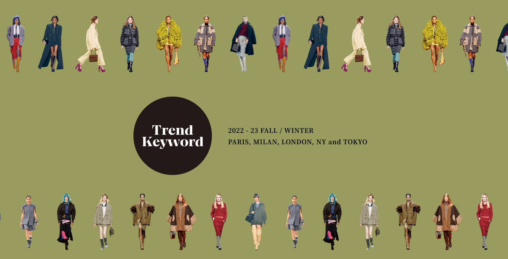
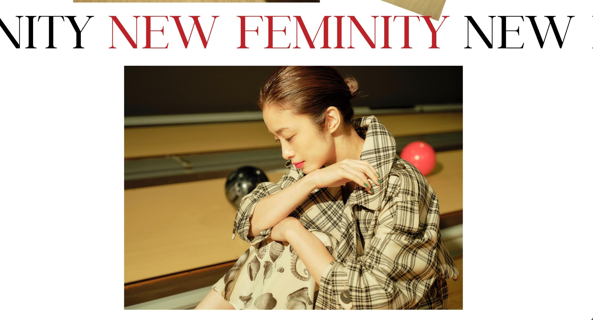
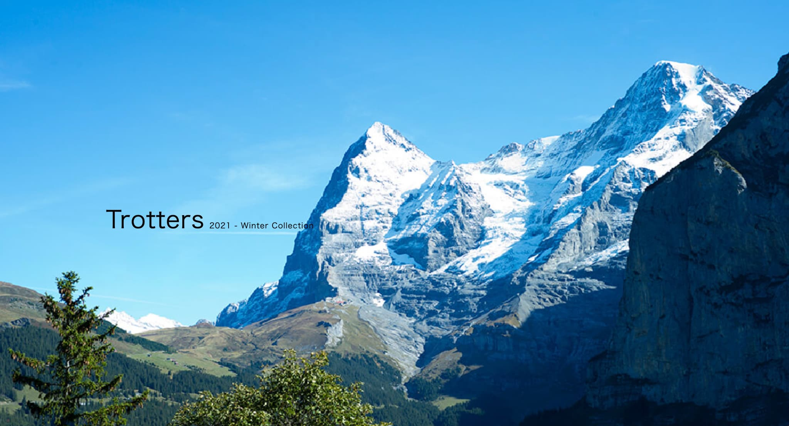
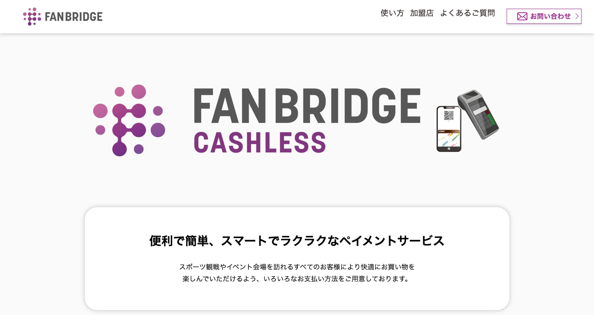
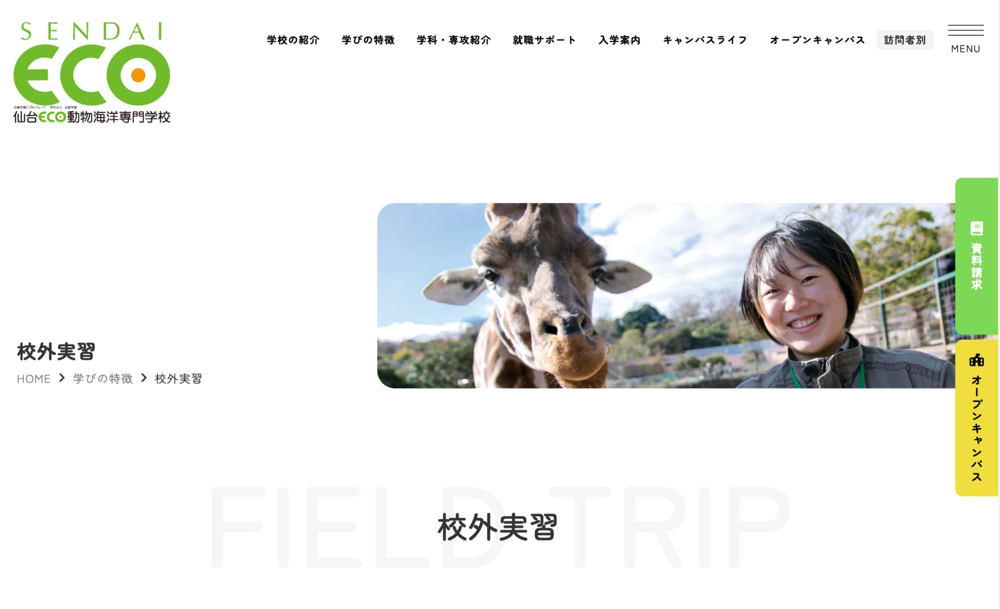
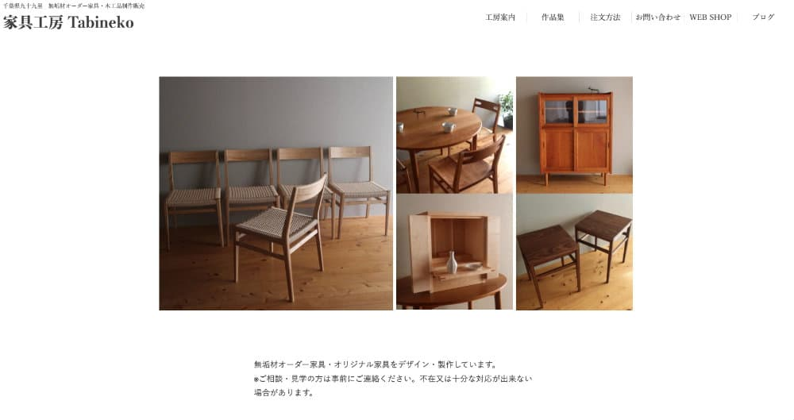

SHOP SITE - 01

- 制作の担当範囲と概要
- 担当範囲：全ページコーディング（マークアップ、動きの実装など）、レイアウトの調整、レスポンシブデザインの設計、インタラクション設計
- 制作期間：（お戻しを含めず）コーディングに約10日間
- 使用ツール・言語：Photoshop, HTML5, CSS3, JavaScript(jQuery)
- 制作の目的とターゲット
- サイトの目的：ブランドの世界観の確立、認知拡大、ストーリーの共有
- ターゲット層：30代以降の女性、日常着にこだわりがある
- デザインの意図：忙しい時間を忘れて日常にリラックスやクリエイティブな発想を提案する
FEATURE PAGE - 02

- 制作の担当範囲と概要
- 担当範囲：デザイン、全ページコーディング（マークアップ、動きの実装など）、レイアウトの調整、レスポンシブデザインの設計、インタラクション設計
- 制作期間：コーディングに約7日間
- 使用ツール・言語：Photoshop, HTML5, CSS3, JavaScript(jQuery)
- 制作の目的とターゲット
- サイトの目的：トレンドの周知、資料の請求
- ターゲット層：服飾に携わる人、マスコミ
- デザインの意図：ブランドのシーズンキャンペーンサイト
FEATURE PAGE - 03

- 制作の担当範囲と概要
- 担当範囲：デザイン、全ページコーディング（マークアップ、動きの実装など）、レイアウトの調整、レスポンシブデザインの設計、インタラクション設計
- 制作期間：コーディングに約5日間
- 使用ツール・言語：Photoshop, HTML5, CSS3, JavaScript(jQuery)
- 制作の目的とターゲット
- サイトの目的：トレンドの周知、資料の請求
- ターゲット層：服飾に携わる人、マスコミ
- デザインの意図：ブランドのシーズンキャンペーンサイト
ORIGINAL SITE - 04

- 制作の担当範囲と概要
- 担当範囲：全ページコーディング（マークアップ、動きの実装など）、レイアウトの調整、レスポンシブデザインの設計、インタラクション設計
- 制作期間：コーディングに約2日間
- 使用ツール・言語：Photoshop, HTML5, CSS3, JavaScript(jQuery)
- 制作の目的とターゲット
- サイトの目的：テストサイト制作、レスポンシブにシームレスに対応したデザインを目的とした制作
- ターゲット層：ー
- デザインの意図：レスポンシブにシームレスに対応したデザインを目的とした制作（今後改良予定）
FINANCIAL SITE - 05

- 制作の担当範囲と概要
- 担当範囲：デザイン、コーディング（マークアップ、動きの実装など）、レイアウトの調整、レスポンシブデザインの設計、インタラクション設計
- 制作期間：コーディングに約7日間
- 使用ツール・言語：Photoshop, HTML5, CSS3, JavaScript(jQuery)
- 制作の目的とターゲット
- サイトの目的：新規サービスに伴う周知
- ターゲット層：サッカーに興味がある人、サッカー観戦によく訪れる人
- デザインの意図：イベントにて煩わしさから解放されて簡単に決済ができることを求める人
SCHOOL SITE - 06

- 制作の担当範囲と概要
- 担当範囲：ページコーディング（マークアップ、動きの実装など）、レイアウトの調整、レスポンシブデザインの設計、インタラクション設計、デザイン
- 制作期間：1Pにつきコーディングに約2日間
- 使用ツール・言語：Figma, HTML, CSS3, JavaScript
- 制作の目的とターゲット
- サイトの目的：動物に興味がある、動物に関する知識を高めたい、将来動物の生態に関わる仕事に就きたい
- ターゲット層：高校卒業を控えた学生、進路を考えている学生など
- デザインの意図：とっつきやすく（エネルギーが軽くて明るいイメージ）、知りたい情報、知識を得られる（自分から取得する情報では得られない知識など）
- 他に担当したページのご紹介 よくある質問 校舎・施設紹介 仙台ECOの動物たち 仙台ECO独自の実習授業 4年間で「好き」を学ぶ！ 企業プロジェクト 学科・専攻紹介 卒業生インタビュー
SHOP SITE - 07

- 制作の担当範囲と概要
- 担当範囲：デザイン提案、全ページコーディング（マークアップ、動きの実装など）、レイアウトの調整、レスポンシブデザインの設計、インタラクション設計
- 制作期間：デザインに約1ヶ月、コーディングに約20日間
- 使用ツール・言語：HTML, CSS, JavaScript
- 制作の目的とターゲット
- サイトの目的：知人のビジネス立ち上げに伴いサイトを制作
- ターゲット層：一生物として家具を所有したい人、理想とする日常があってそれを実現するツールを求めている人
- デザインの意図：使い捨てではなく持ち続ける喜び、オーナーになるという自覚をシェアするような意図